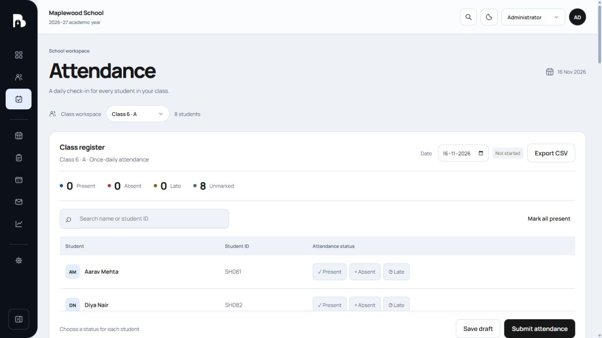
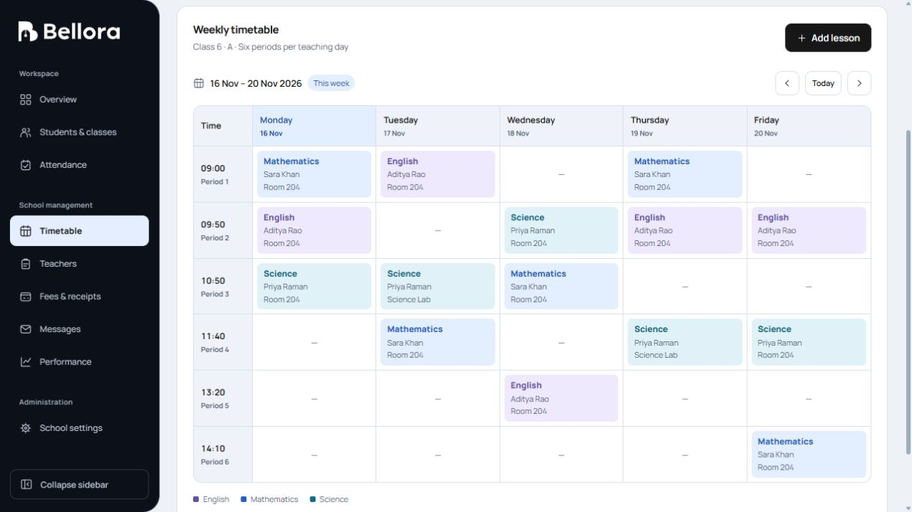
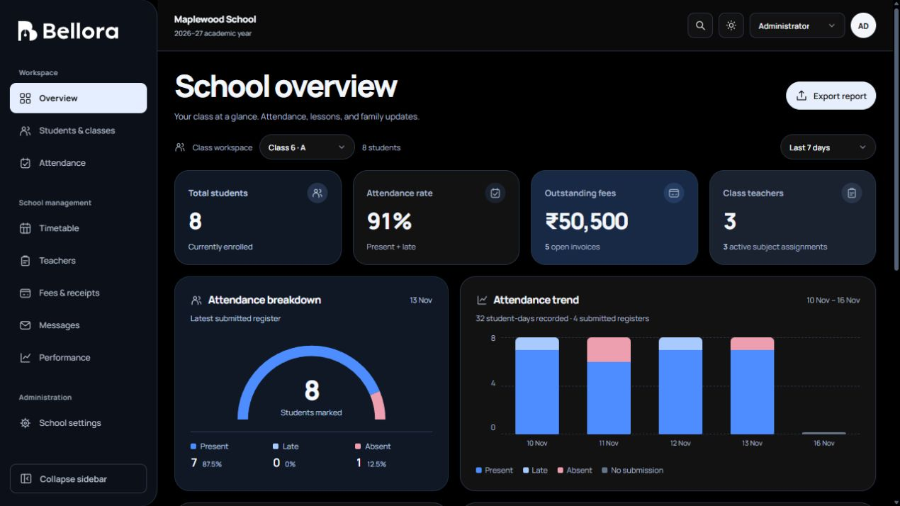
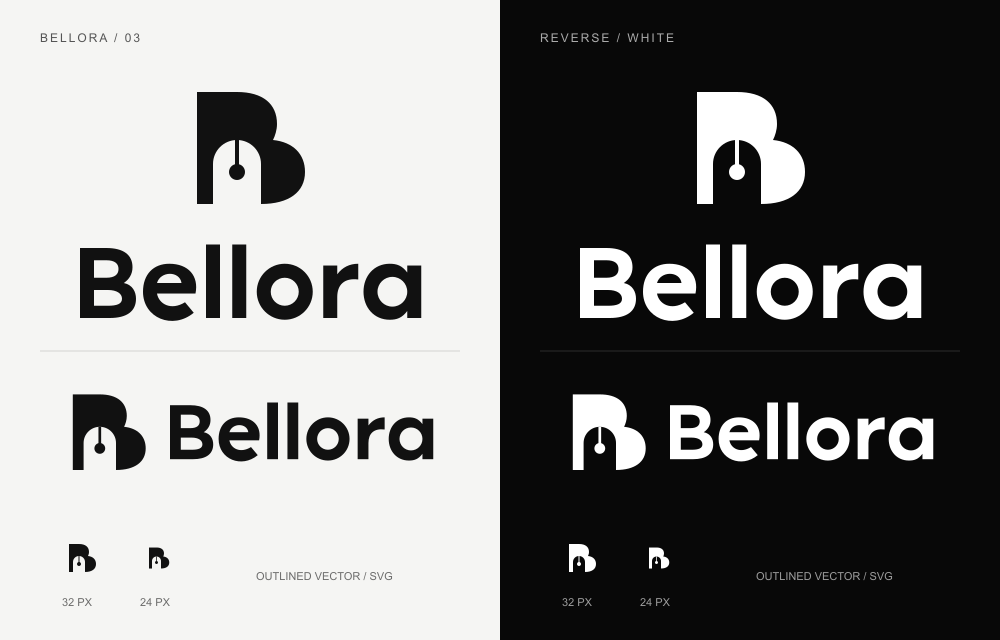

Keep context as staff switch tasks
A shared class selector keeps timetables, attendance, fees, and performance in context. One sidebar groups destinations, with a compact desktop rail and a mobile drawer.
A class-centred school workspace linking attendance, timetables, teacher allocation, fees, family updates, and student performance.
Try the demoThe reel presents three Bellora screens: the school overview, the class attendance register, and the dated weekly timetable.
How can staff manage the school day while keeping the right class, date, and role in view?
Bellora is a school administration concept set in Maplewood, a fictional Indian school with Classes 1–12 and configurable sections. It uses one set of fictional class records to connect the daily work of an administrator and a teacher.
The first journey starts with class setup and ends at a submitted attendance register. It gives six modules a shared structure before introducing more roles and workflows.
An administrator may need to check which registers were submitted across the school. A teacher taking attendance needs the roster for one assigned class on one date. A single undifferentiated view would give both people too much to scan.
The design hypothesis was that keeping the selected class and role in view would reduce repeated navigation. The concept uses task scenarios and fictional records as its evidence.
A shared class selector keeps timetables, attendance, fees, and performance in context. One sidebar groups destinations, with a compact desktop rail and a mobile drawer.
Draft, submitted, and corrected states make saved progress visible. The register requires a mark for each eligible student before submission and records the reason for a correction.
Week controls, dated columns, and subject colours make the schedule easier to scan. Validation checks for teacher and class conflicts when saving a lesson.
Class metrics lead into an attendance trend, today’s lessons, and recent parent updates. The Bellora mark combines a B, an arched doorway, and a bell clapper.




The demo connects all six modules to the same class context. The validated workflows include attendance corrections, dated timetables, schedule conflicts, class-level reporting, and browser-local persistence.
Payment, messaging, and role switching are simulations. No real accounts or student records are used. The work was validated as a browser prototype, and no school adoption or time savings were measured.
Start with a sample class, open Attendance, and mark a student to begin a draft register. Use Workspace role to compare the administrator and teacher views. Saved work stays in the current browser.